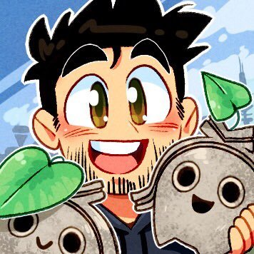
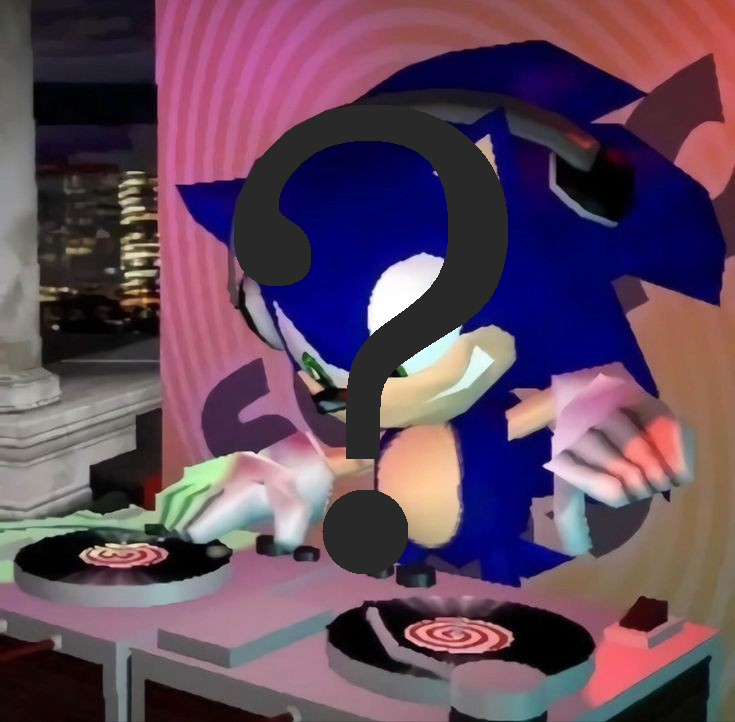
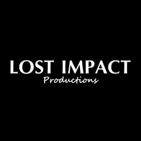

This site has been made for archival purposes only and in no way is officially affiliated with ChaosX, SEGA, Sonic Team or any of the affiliated contributors. (Please refer to footer for further details).
Sonic the Hedgehog: Project '06, or simply Sonic P-06, is an upcoming platform game developed by Argentinian programmer Ian "ChaosX" Moris for Microsoft Windows. It is an unofficial remake of the 2006 video game Sonic the Hedgehog, originally developed by Sonic Team and published by Sega. As the original game is infamous for its poor quality, the remake aims to fix its issues, as well as restore content scrapped during development. As of April 2023, the project has had five demos released, with each demo getting a bug-fix patch that would address certain issues, while also adding more quality of life improvements, based on fan feedback.
Project '06, a remake of the 2006 video game Sonic the Hedgehog, is a 3D platformer. As of Release 5, the game features all nine playable characters: Sonic the Hedgehog, Shadow the Hedgehog, Silver the Hedgehog, Miles "Tails" Prower, Knuckles the Echidna, Rouge the Bat, E-123 Omega, Blaze the Cat, and Amy Rose.
Although a faithful recreation, Project '06 features various changes designed to improve the experience. The time spent on loading screens has been significantly reduced. The graphics are more detailed and the game uses different color grading. Character attributes have been altered: for example, Sonic and Silver now move faster, while Tails and Knuckles' moves from Sonic Adventure (1998) and Sonic Adventure 2 (2001) have been reintroduced. Players can also choose between Sonic's animations from the final game or his animations from a 2005 prerelease showing.
Sonic the Hedgehog (commonly referred to as Sonic '06) is a 2006 platform game developed by Sonic Team and published by Sega for the Xbox 360 and PlayStation 3. It was intended to be a reboot of the Sonic franchise, with a more realistic setting than previous games. The game faced serious problems that forced Sonic Team to rush development, and it received negative reviews for its story, controls, camera, bugs, and long load times. According to Engadget: "Many consider Sonic '06 to be the lowest point in the franchise... Most Sonic fans want to forget the game was ever released." The game was never released on Windows personal computers, so some Sonic fans have made unofficial efforts to develop a port. Beginning in 2015, a group led by developers Gistix and Mefiresu worked on a port of Sonic the Hedgehog using the Unity game engine, and released a number of demos between 2017 and 2018. Although development on the project has continued, progress has slowed, and Gistix is no longer involved. In December 2020, Mefiresu announced that the project was cancelled.
Project '06 is being developed by Argentinian programmer Ian "ChaosX" Moris. Moris had been a Sonic fan since childhood, when he received a Sega Genesis with a copy of the original Sonic the Hedgehog (1991). He played through the Genesis Sonic library. When he got a PlayStation 2 (PS2) in 2010, he played its Sonic releases, as he was "addicted to Sonic the Hedgehog and gaming overall by that point," and when he got a computer, he played more Sonic titles like the Sonic Adventure games. It was after getting the computer that Moris learned of the 2006 game, and it immediately fascinated him. "Its advertisements, atmosphere, tone and sound, CGI, graphics... everything resonated with me... It grabbed my attention like crazy." Moris unsuccessfully attempted to get a copy of the game despite being aware it had been poorly received; this did not matter to him.
Reviewing the first demo, Nathan Grayson of Kotaku wrote that while Project '06 still suffered from flaws such as poor level design, it was "already a marked improvement" over the original game, with fewer glitches and a better feel. Nick Summers of Engadget called Project '06 a "remarkable feat" and said it demonstrated that Sonic remained culturally relevant despite poorly received games. In his solo re-review of the original console release, G4 co-host Jirard "The Completionist" Khalil added comments about P-06, called it "a ton of fun" said that Moris "showed me that the amount of time and love put into a game is just as important as the game itself... There were people out there who saw [the original and] thought it could be good with a bit of polish, and you know what? They were right! ... If I was just reviewing Project '06, I'd easily say it was worth your time".
Primary Developer/ Publisher
Animator
Unity Developer
Texture artist, Model Rigger, Collision Detection Developer
Dialogue restoration, editing and script rearrangements